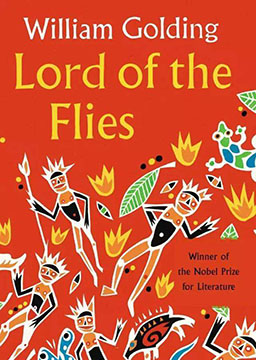
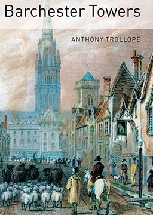

双语小说
收录中英文双语小说300多部，包括世界经典名著、社会小说、悬疑小说等短篇和长篇小说，可按照初中难度、高中难度和大学难度分类阅读，每部小说都有分段中英文对照，点击单词可查看中文翻译。

蝴蝶梦 (Rebecca)
作者：达夫妮·杜穆里埃 (Daphne du Maurier) [英国]
在法国南部海滨的一座悬崖上，一个精神恍惚的男人来回徘徊着。一声惊叫打断了他的沉思，来到附近画画的一个年轻女子怀疑他有自杀的倾向而上前喝止。这个鲁莽的举动让两人很快结识，甚至很快成为一对亲密的恋人。这位英俊潇洒的贵族富豪叫梅西·文德斯，几年前的丧妻令他沉痛不已，而那个年轻女子只是一个贴身使女。他们开始在外面约会，但每次年轻的姑娘问起德文特久负盛名的曼德利庄园时，文德斯先生总是显得忧郁而沉默。文德斯先生逐渐爱上了这个天真、善良的姑娘，就在她要随主人离去的时候，他向她正式求婚。很快，梅西·文德斯带着他新婚的妻子回到了自己在英国的庄园。 庄园里严厉的管家丹弗斯夫人明显流露出对文德斯夫人的厌恶和对前任文德斯夫人丽贝卡的崇拜。丽贝卡虽然死了，却影响着庄园里的一切，庄园到处都是带有里贝卡名字缩写的物品。文德斯夫人尝试着熟悉环境，却一次次碰壁，所有这些痛苦经历似乎都在给她一个暗示：她的丈夫只爱丽贝卡。但是逝去的丽贝卡仿佛隐藏着很多的秘密，远远不是表面上看起来那么圣洁、美丽。终于，为了挽回文德斯夫人的心，梅西承认是他杀死了丽贝卡，并把丽贝卡沉尸大海。就在这时，丽贝卡的尸体被人发现，她的死因重新引起了人们的关注。经过调查，最终还是真相大白：丽贝卡是自杀死的，却把一切布置得象是被梅西亲手杀死的样子来报复他。最后，丹弗斯夫人在绝望中点起大火，与曼德利庄园一起化为灰烬。吉姆老爷（简化版） (Lord Jim)
作者：约瑟夫·康拉德 (Joseph Conrad) [英国]
吉姆离开英格兰开始了水手生涯，他快乐地憧憬着等待他的海上新生活。他认为自己是个勇敢、尽责的人，就像他小时候读过的航海故事中的主人公一样，时刻准备着迎接将要到来的危险。但当危险真正来临时，吉姆却没有准备好。他是“帕特纳号”的大副，这艘旧船载着800名乘客在横渡印度洋时遇险了。这正是勇者应当挺身而出的时候，但吉姆却没能表现得像他梦想中的英雄那样。很快，“懦夫”这个词在东方所有的海港传开了。只有一个人相信吉姆。这个人是马洛，他试着帮助吉姆找到新的生活，后来，他把这段故事讲给朋友们听。故事讲述了吉姆找寻失去的荣誉的过程——通向灵魂阴暗处的心路历程，在那里，梦想和恐惧就像掠过月亮表面的阴影。
小镇传奇 (Country Tales)
作者：本涅特 (Bennett) [英国]
邓瑞·梅钦是个乐天派。当他遇到麻烦时，决不会认输言败，哭天抹泪。他会主动去寻找机会，一旦发现机会，便会牢牢把握。当然，幸运之神也很眷顾着他。幸运的是伯爵夫人打算办场舞会，可邓瑞是如何弄到请柬的呢？幸运的是科多林夫人跟邓瑞的老板起了争执，可邓瑞是如何成为科多林太太的收租人的呢？更幸运的是“亚尔马号”在兰迪德诺附近海域沉没，可邓瑞是如何从这件事上赚得1000英镑的？
小夜曲: 音乐与黄昏五故事集 (Nocturnes: Five Stories of Music and Nightfall)
作者：石黑一雄 (Kazuo Ishiguro) [日本]
以音乐为线索，由五个看似独立却又相互关联的故事组成。故事的主要人物都同音乐情牵相关：郁郁不得志的餐厅乐手，风光不再的过气歌星，孤芳自赏的大提琴手，为求成功被迫整容的萨克斯手等等，多是对音乐一往情深，对生活却满腹牢骚。情节或荒诞不经，或令人唏嘘，借音乐人生这个主题，表现了作者一贯的对现代人生存状态的反思：理想与现实的差距，命运的嘲弄，才华的折磨，以及庞大社会机器控制下被压抑的情感。
精灵鼠小弟 (Stuart Little)
作者：埃尔文·布鲁克斯·怀特 (Elwyn Brooks White) [美国]
三部被誉为“二十世纪读者最多、最受爱戴的童话”之一。好莱坞根据本书改编的电影，让倔强而可爱的鼠小弟征服了全世界。内容简介：利特尔家的第二个孩子斯图尔特生下来只有两英寸高，模样活脱脱就是一只小老鼠。这位老鼠小弟心地善良、聪明伶俐，一家人里头，除了那只名叫“野茉莉”的猫，没有不喜欢它的。斯图尔特最要好的朋友是寄居在他们家的小鸟玛加洛，为了让美丽的玛加洛不受“野茉莉”的欺负，鼠小弟可真是鼓足了勇气，动足了脑筋。他发誓要把玛加洛找回来，于是开动玩具车就上了路。一路上，险情趣事层出不穷，鼠小弟历尽千辛万苦……鼠小弟最后到底有没有找到玛加洛呢？你一定猜不着。好莱坞根据本书改编的电影，让倔强而可爱的鼠小弟征服了全世界。德拉库拉（简化版） (Dracula)
作者：布莱姆·斯托克 (Bram Stoker) [爱尔兰]
1875年春，乔纳森·哈克因公出差去特兰西瓦尼亚，拜访德拉库拉伯爵。乔纳森其实并不想去，因为再有几个月他就要和他美丽的明娜结婚了，他现在不想离开她。在德拉库拉城堡逗留期间，他坚持写日记，每天他都有越来越多可怕的事要写。为什么他只有在夜晚才能见到德拉库拉伯爵？为什么他在镜子里看不到伯爵？那三个有着血红的嘴唇和锋利的长牙，夜晚来到他屋里的美丽女人又是谁？在英国的家里，明娜和她的朋友露西待在一个海边的小镇上。她期盼着乔纳森的来信，而他却音信全无，明娜有些害怕了。也许乔纳森病了，或是身处险境，当然明娜并不担心自己或者她的朋友露西。住在一个安静的英国海边小镇上，什么样的危险能发生在这两个年轻姑娘的身上呢？
蝇王 (Lord of the Flies)
作者：威廉·戈尔丁 (William Golding) [英国]
英国现代作家、诺贝尔文学奖获得者威廉·戈尔丁创作的长篇小说，也是其代表作。作者将抽象的哲理命题具体化，让读者通过阅读引人入胜的故事和激动人心的争斗场面来加以体悟，人物、场景、故事、意象等都深具象征意义。《蝇王》是一本重要的哲理小说，借小孩的天真来探讨人性的恶这一严肃主题。内容简介：故事发生于未来第三次世界大战中的一场核战争中，一群六岁至十二岁的儿童在撤退途中因飞机失事被困在一座荒岛上，起先尚能和睦相处，后来由于恶的本性的膨胀起来，便互相残杀。孩子们分为两帮，分别以拉尔夫和杰克为首。为了争夺对小社会的统治支配权，建立可以发号施令的权威，两派开始明争暗斗。在随之而来的斗争较量中，拉尔夫和猪崽子一方被杰克和罗杰一方打得大败。失去了文明世界的理性和秩序，没有了纲纪规则，没有了互助合作，这群孩子完全堕落成一群嗜血的“野兽”。一个叫欧维的男人 (A man called Ove)
作者：弗雷德里克·巴克曼 (Fredrik Backman) [瑞典]
《人物周刊》说，“读这个故事，你会笑，你会哭，会因此想搬到北欧去，因为那里的一切都更可爱一些。”这个发生在瑞典的故事，如生命庆典般绚丽斑斓，它让我们思考，自己是谁，以及我们要如何过这一生。内容简介：一个名叫欧维的男人，他59岁，脾气古怪，嫌东嫌西，带着坚不可摧的原则、每天恪守的常规以及随时发飙的脾性在社区晃来晃去，被背地里称为“地狱来的恶邻”。他每天一大早就四处巡视，搬动没停进格线的脚踏车，检查垃圾是否按规定分类，抱怨谁家的草坪还不修剪，诅咒那只掉了毛的流浪猫。没完没了 。他想自杀。直到一个十一月的早晨，当一对话痨夫妇和他们的两个话痨女儿搬到隔壁，不小心撞坏了他的邮筒。谁也无法想象与四个极其话痨的人为邻会是如何令人难以忍受，那简直比重要的邮筒被撞坏还要糟糕！可是，就是这样糟糕透顶的“坏邮筒”们，却渐渐让欧维，那个几度自杀未遂的男人，拥有了新的思考。
巴彻斯特教堂尖塔（简化版） (Barchester Towers)
作者：安东尼·特洛勒普 (Anthony Trollope) [英国]
在英格兰的大教堂城市，教会和政治的关系密不可分。政府任命这些城市教会的首领——主教，主教之下还有执事长、教士长、代牧、堂区牧师以及特遣牧师——级别、重要性、影响力和收入都不尽相同的各类神职人员。这一切已经够复杂的了，然而，普劳蒂博士被委任为巴彻斯特新主教一事，颠覆了这座宁静城市的既定等级，权力斗争由此而起，反抗对象是新任主教的妻子——令人生畏的普劳蒂太太。再加上新任主教的特遣牧师奥巴代亚·斯洛普，一个油滑的野心家，战争的要素就算齐备了。
恋恋笔记本 (The Notebook)
作者：尼古拉斯·斯帕克思 (Nicholas Charles Sparks) [美国]
20世纪40年代，北加利福尼亚的海布鲁克，富有的尼尔森一家到此度假。女儿艾莉正值豆蔻年华，她漂亮活泼，对周围的一切充满了好奇。夜幕降临，华灯初上，艾莉和好友来到当地的游乐场，忘情地玩起了摩天轮。年轻的诺亚（莱安·高斯利饰）被她爽朗的笑声吸引，不顾一切地爱上了这个女孩。尽管艾莉出身上流社会，诺亚只是一个穷小子，但他们还是跨越了阶层与观念，执着而热烈地相爱了。家人的阻挠和战争的爆发，最终将这对有情人分开，但爱的记忆却永久地保留在他们脑中。7年后，诺亚返回故土，艾莉已经在他的生活中消失，可她的音容笑貌仍时时浮现在诺亚的脑海，于是他按照当初两人的设想装饰了一座大屋。诺亚还不知道，艾莉已悄悄来到这个初恋的地方。再过几周，艾莉就要和富有的军官朗结婚，却发觉自己仍然无法割舍这段情。两个人终于再次相遇，又重新开始了一段激情时光。他们多舛的爱情还会有幸福的未来吗？